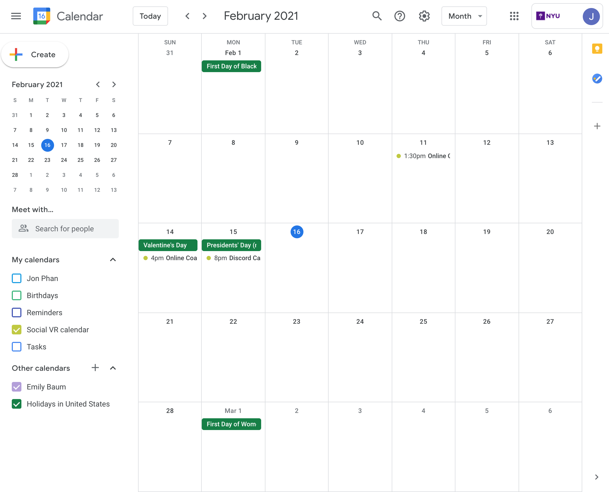

Week 2: Self Presentation: Avatar Creation
Social Calendar
https://calendar.google.com/calendar/u/0?cid=Y19zaTByZzljczU2YjNrZzV0N3M3NGYydWc5Z0Bncm91cC5jYWxlbmRhci5nb29nbGUuY29t  For my social calendar this week, I played card games with my friends, played video games, and also did some chatting with some other friends for health coaching.home
while (!deck.isInOrder()) {
print 'Iteration ' + i;
deck.shuffle();
i++;
}
print 'It took ' + i + ' iterations to sort the deck.';